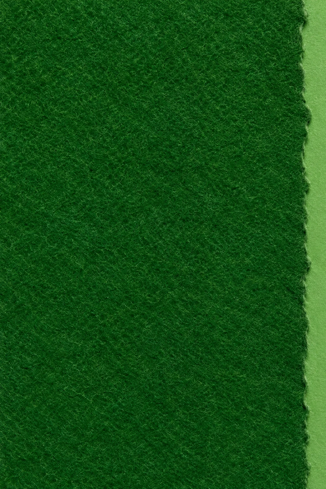

Start here.
Land somewhere.
A paper court for supplied start-to-bounce plans. Choose a path and see exactly where its two points belong.
0paths organized
A note from Courtline
Preparing draft
Preparation0%

Far side ↑23.77 m longNet at y = 0
Two points.
One shared scale.
Start, metres
↗Bounce, metres
The net center is (0, 0). Positive x goes right and positive y goes toward the far side. Both axes use the same scale. Singles is 8.23 m wide; doubles is 10.97 m. Service lines sit 6.40 m from the net and always stop at the singles sidelines.
Court dimensions: ITF Rules of Tennis, Rule 1, in the 2026 rulebook.
Original supplied illustrative paths. Straight lines connect start and bounce coordinates; they do not model ball flight, spin or coaching outcomes.